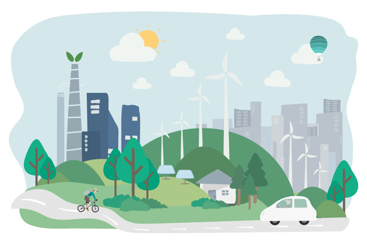

Menu
Beranda
Login
Registrasi
Panduan Cetak SK
Panduan Monitoring
Lihat Pedoman
PEDOMAN TEKNIS ARAHAN
SISTEM DRAINASE KOTA SURABAYA

REKOM
Ini deskripsi halaman Rekom
KAJIAN - SITE PLAN
Ini deskripsi halaman Kajian - Site Plan
KAJIAN - MIXED USE
Ini deskripsi halaman Kajian - Mixed Use